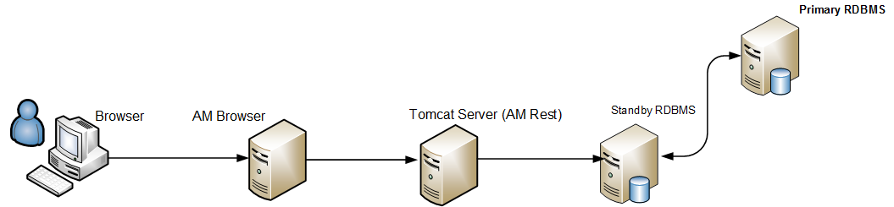

AM Browser installation
Prerequisite
AM Browser functions on top of Asset Manager 9.5x and 9.60. Before the installation, make sure that your AM Browser server complies with the specifications in AM 9.5x and AM 9.60 support matrices.
For Asset Manager 9.60 Support Matrix, see https://softwaresupport.hpe.com/group/softwaresupport/search-result/-/facetsearch/document/KM02417964.
For Asset Manager 9.5x Support Matrix, see https://softwaresupport.hpe.com/group/softwaresupport/search-result/-/facetsearch/document/KM01450310.
Services
AM Browser has the following two services.
- AM Browser Service that provides user interface.
- AM REST Service that provides AM fundamental data service.
Please make sure you always use the REST Service shipped with AM Browser to get the best compatibility.
Deployment
It is recommended that AM Browser connects to a Standby RDBMS.

Installation of AM REST Service for the first time
-
Preparation.
We recommend that you install AM REST Service on a server that has either AM Windows Client or AM Web Service installed and can connect to AM DB, the configuration of ODBC (64-bit) can be re-used to install the REST Service.
Otherwise, you need to create an ODBC (64-bit) DSN. To do this, go to the
am-browser-rest\binfolder, run2_registerODBCService.batand follow the guide to register SQLSERVER ODBC Data Source Name. -
Unzip files.
Unzip
am-browser-rest-1.0.zipto a folder, for example, am-browser-rest. -
Configure the server settings.
Go to the am-browser-rest\websvc folder, duplicate the
package.properties.defaultfile and rename the copy aspackage.properties. In thepackage.properties:- DB connection. Make sure the database information such as
DB.datasource,DB.loginandDB.passwordis set correctly. Tips: You can refer to AM web service server’s package.properties file as it uses the same settings. - UCMDB connection. Make sure
PushAdapter.Monitor.Enabled,UCMDB.Server.Host,UCMDB.Server.Port,UCMDB.Server.UserandUCMDB.Server.Passwordare set correctly. - Server port. If 10081, the default port of the REST Service, is occupied, modify am-browser-rest\apache-tomcat-8.0.36\conf\server.xml to set another port.
- DB connection. Make sure the database information such as
-
Generate key files.
- If the server instance is for temporary trial only, you can skip this step and it will use the default files.
- Generate new key. Go to am-browser-rest\bin folder, run
0_generatePassword.batwith the administrator right. - Re-use the existing key files. If there are secret-share files, make sure that the configuration
PBKDF2.Password.First.FileandPBKDF2.Password.Second.Filein package.properties are set correctly and skip the key file generation.
-
Deploy .war file to Tomcat.
Go to the am-browser-rest\bin folder, run
1_deployRestServer.batwith the administrator right and follow the instructions. -
Windows service registration
- Register: Go to the am-browser-rest\bin folder, run
3_registerRestService.batwith the administrator right, a service namedHPE am-browser-rest-serviceis created. - Unregister: Go to the bin folder, run
6_unregisterRestService.batwith the administrator right.
- Register: Go to the am-browser-rest\bin folder, run
-
Start/Stop the REST Service.
Run
4_startRestService.batto start the service and5_stopRestService.batto stop the service.
Installation of AM Browser Service for the first time
- Unzip files. Unzip
am-browser-1.0.zipto a folder, for example, am-browser. -
Configure the server settings. Duplicate the
am-browser-config.properties.defaultfile and rename the copy asam-browser-config.properties. In theam-browser-config.propertiesfile, make sure the port (8080by default) is set correctly and not occupied by other running processes. Please refer Configuration Chapter for details. -
Windows service registration
- Register: Run
0_registerService.batwith administrator right, and a service namedHPE am-browser-serviceis created. - Unregister service. Run
3_unregisterService.batwith administrator right to unregister the service.
- Register: Run
- Start/Stop
- Start AM Browser Service. Run
1_startService.batwith administrator right to start the service. - Stop AM Browser Service. Run
2_stopService.batwith administrator right to stop the service.
- Start AM Browser Service. Run